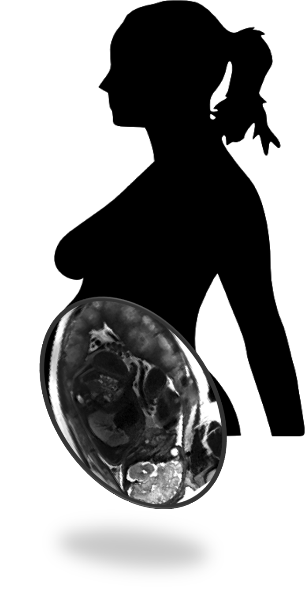

Contact
This is the contact section
Overview
The placenta is a unique organ that serves as an interface between a mother and a fetus. The placenta plays an important role in fetal growth and development. Placental vasculature and surrounding tissue support transport of oxygen, glucose and other nutrients from the mother to the fetus. Increasing evidence suggests that modifiable maternal factors, such as obesity, impact placental function and therefore fetal health. This motivates development of technology for in vivo, real time monitoring of placental structure and function.
"Monitoring Placental Health in Real Time" is a collaborative research project to developing magnetic resonance imaging (MRI) based techniques for monitoring placental function.
Facts about the placenta
Weight: the term placenta typically weighs about 500g (about 1 pound).
Size: the human placenta has an average thickness of between 2.0-2.5cm, and diameter of 22cm. It is just about the size of the human face.
The placenta can be thought of as the interface between the maternal and fetal blood systems. The surface area of the placental membrane that acts as this interface has a surface area of about 13 m2 (about the size of an average parking spot). The placenta is much more than a passive conduct between the mother and the fetus. It provides nutrition to the baby, and functions as its lungs, kidneys and immune system.
The National Institute of Child Health and Human Development has recently launched the Human Placenta Project. The placenta and its relationship to fetal and maternal wellbeing will be much better understood as the project goes.
Projects
Fetal Motion during typical MRI Scan
Motion due to the mother's breathing, uterus contraction, and fetal movements is one of the main challanges during fetal and placental MRI.
OxyMRI of Placenta
MRI can be used to visualize the oxygen transport in placenta in realtime. Here, the maternal oxygen supply was alternated from normal, ambient air (21% O2) to a pure oxygen mixture (100% O2) and back again to ambient.
Assessment of Twin Placentas
Selective intrauterine growth restriction (sIUGR) in monochorionic twins is associated with a substantial increase in perinatal mortality and morbidity for both twins. Assessment of placental insufficiency, primary cause of sIUGR, currently relies on indirect measures of umbilical artery (UA) Doppler. We hope novel MRI methods will improve the prenatal evaluation of placental function.
Please note that in the following images anatomy is artifically colored and computer generated.

Twin fetuses (one computer generated in red, and one generated in cyan) that share one placenta, and an umbilical cord that runs from the belly of the "red" fetus to the placenta.

Monochorionic placenta, with two cord insersions. Highlighted regions in the placenta belong to each twin.
Effect of obesity to the placental transport
Maternal obesity increases risks of maternal complications, prematurity, macrosomia, and more than doubles the rate of stillbirths. Therefore, obesity is in epidemic proportions with a clear negative impact on fetal development. Ultrasound, the current frontline assessment tool, is severely limited in obese mothers. Methods to safely and noninvasively monitor placental health would allow early detection and insight into mechanisms of placental dysfunction in obesity.
Our focus in this project will be to improve MRI technology and test its ability to detect differences in placental structure and function in the second trimester in a population of healthy pregnant women and a matched population of obese women.
Novel MRI Methods Development
MRI has become a powerful tool to noninvasively assess structure and function in many organ systems, particularly at 3T. However, to date, MRI has not made a significant impact on placental assessment due to major obstacles, primarily complex non-rigid placental motion and magnetic field (B0) inhomogeneities (significant in the abdomen at 3T). To overcome these major obstacles, we propose to improve all components in MRI hardware, MRI acquisition and post-processing methods.
Participate
Recruitment process will start soon for each branch of the project.
Sponsors
Our studies are supported by:
- NIH U01 HD087211
- NIH R01 EB017337
- Madrid-MIT M+Vision Consortium
Related links: